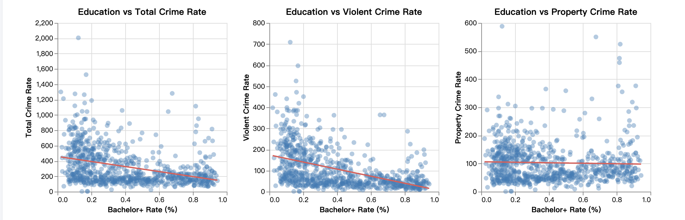
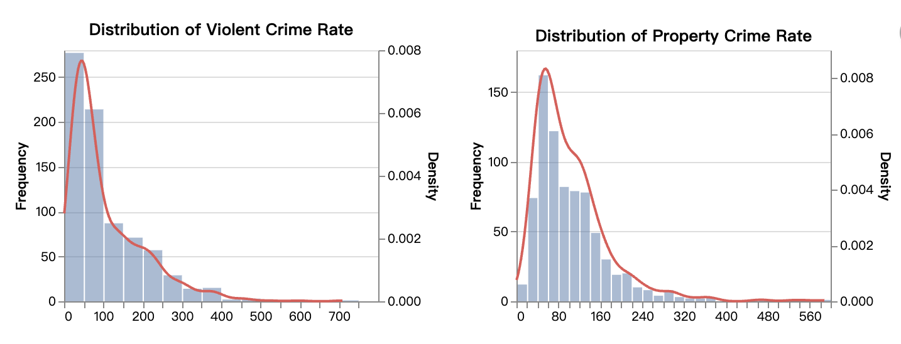
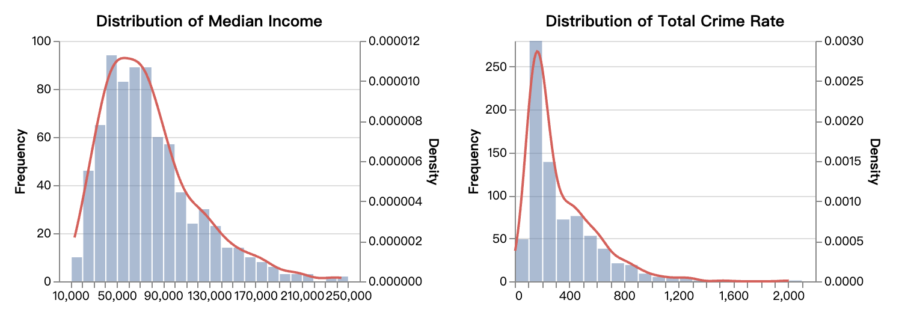

MSCAPP Student at the University of Chicago
Email: luyaow@uchicago.edu
GitHub: https://github.com/luyaow98
I am a graduate student in the MSCAPP (Computational Analysis and Public Policy) program at the University of Chicago. I received my undergraduate degree in Finance and am now building my skills in data analysis and computational work. Through my coursework, I am currently learning Python, linear algebra, statistics, and data visualization.
I am interested in using data to better understand real-world social and policy issues.
This project explores the relationship between education levels and crime rates across Chicago neighborhoods using public datasets. The goal of the project is to examine whether neighborhoods with different levels of educational attainment show different patterns in crime.
This was a team project completed as part of CAPP 30122.
My contributions:
Tools used: Python, Pandas, Altair, GitHub
Data sources: Chicago Open Data and ACS-related datasets
Project Repository:
View the project on GitHub

Scatter plot showing the relationship between education-related variables and crime patterns.

Histogram showing the distribution of crime rate across Chicago neighborhoods.

Histogram showing the distribution of education-related variables.